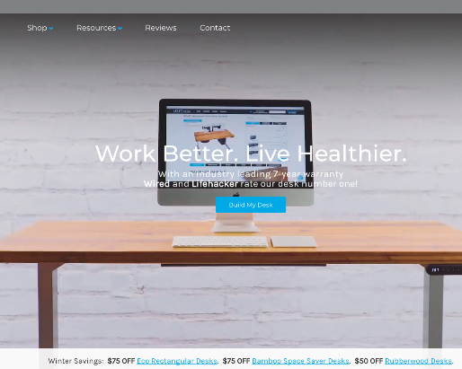
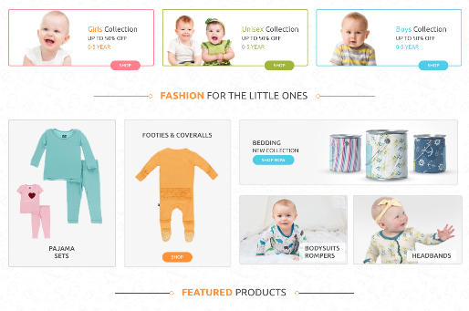
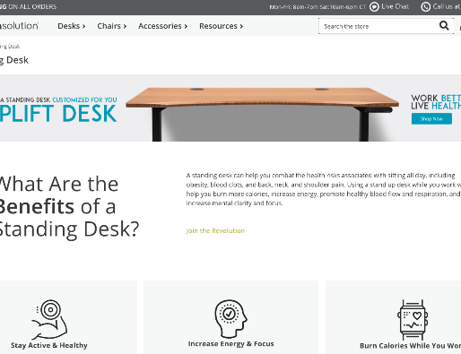
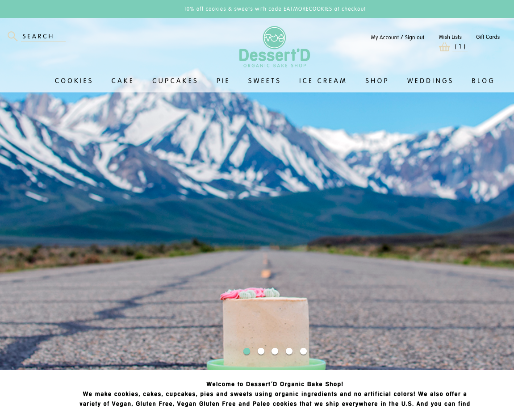
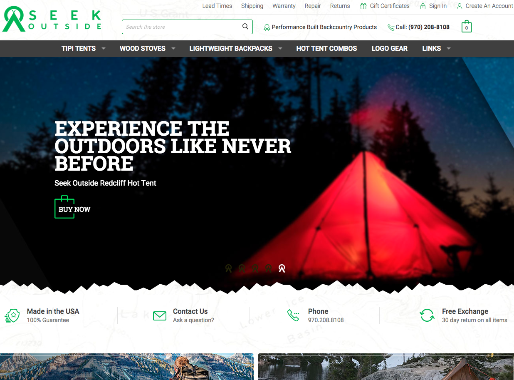
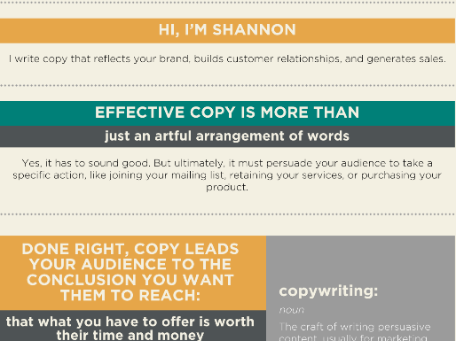

Project Tooling
Using NPM scripts and Webpack allows me to cut my setup and delivery time in half - I use the right tools for the job. Minifying assets, live reload and module bundling allow for speedy delivery of ES6 code.
Mobile First
With more and more faces looking down at our devices, I beleive it is of utmost important to design applications and websites with this in mind. I ensure that page size is small and scripts are efficient, to deliver a clean and fast experience to your users.
Push Pull Repeat
Working with version control is a necessity when developing with teams, and is crucial to project workflow. Commiting often and fixing merge confilicts from the command line is frequent in my normal day.
CSS Workflow
A SASS preprocessor paired with Foundation speeds up my development time, while ensuring your project is not filled with uneeded code and will be browser compatible.
Team Management
While I enjoy playing the role as contributor, I have experience managing small teams and and being the lead developer on extremely successful projects. I enjoy the challenge in making sure deadlines are met, and my people are happy.
SEO Minded
I know that writing compliant HTML and making pages Google-friendly is important to any business, and I create markup with the latest standards for web searches.





Hello,
My name is Pete and I look forward to working with you on your next project. Please feel free to contact me with any questions, thanks!